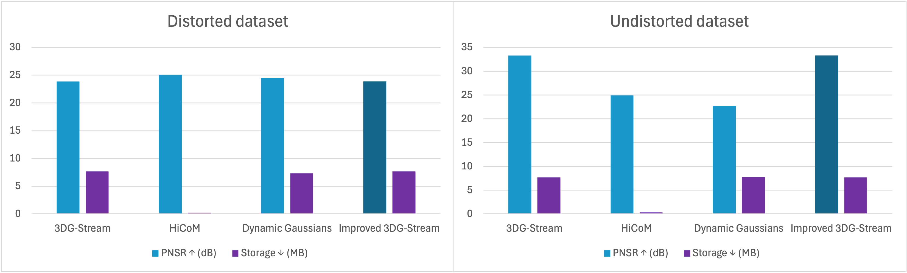
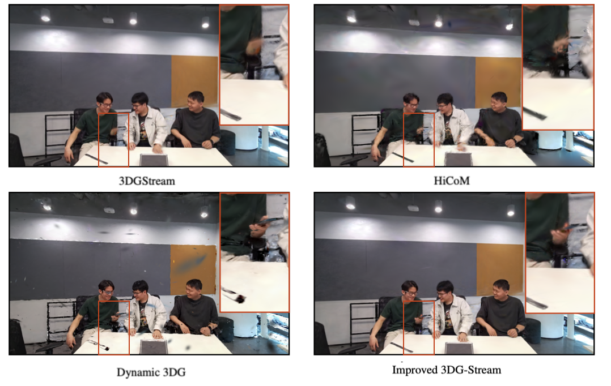
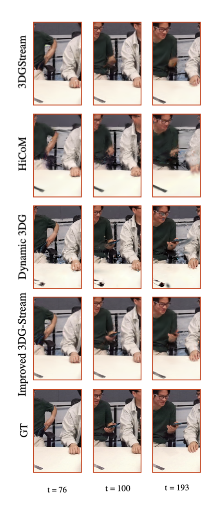

Quantitative Results
All three methods were trained on a dataset prepared according to the specifications outlined by the original authors. In most cases, this required separate processing for
the first frame and subsequent frames.
The reported PSNR values indicate that all three methods
achieve similar reconstruction quality, consistent with the
results presented in their respective papers.
These results suggest that the majority of the scene was
reconstructed successfully and with high fidelity. The
HiCoM method achieves significantly lower storage requirements, highlighting a key improvement in efficiency
compared to other approaches.
Improved 3DG-Stream achieves only a slightly higher
PSNR compared to the original version. Although the reconstruction of the phone is more detailed and visible in
more frames than in the baseline, this improvement comes
at a cost: for every new Gaussian added, one is removed. As
a result, the method may under-reconstruct some uniform
regions, ultimately balancing out the PSNR and failing to
fully reflect the improved reconstruction quality. Furthermore, since the phone occupies only a small portion of the
scene, its contribution to the overall PSNR metric is limited.
HiCoM achieves the highest PSNR, likely due to its accurate reconstruction of static background regions that closely
match the ground truth. However, a closer inspection reveals that the method introduces a significant amount of
noise in areas corresponding to moving objects. This noise
suggests poor handling of dynamic content, which is an undesirable characteristic of the algorithm despite its strong
performance on static regions.
It is worth noting that the training time for 3DG-Stream
and HiCoM was significantly shorter - by a factor of approximately 6 - compared to Dynamic Gaussians, making
them more efficient for practical use.
3DG-Stream emphasizes the importance of undistorting
subsequent camera frames. This process removes lens distortion from the input images and updates the associated
camera parameters, resulting in a rectified version of the
scene that is more suitable for geometric processing.
To ensure a fair comparison, additional experiments were
conducted on the undistorted version of the dataset to assess whether this preprocessing step benefits other methods.
However, a significant improvement was observed only for
3DG-Stream, which demonstrated a 39% performance increase. The results for the other methods remained within
the standard deviation observed across multiple runs.

Qualitative Results
Eventhough all the methods yield satisfactory results in
terms of metrics, it is impossible to tell if our evaluation objective was met. To gain comprehensive insight into quality
of new object reconstruction in the rendered frames from
test camera.
3DGStream The emerging object - a phone - fails to be
reconstructed, indicating a shortcoming in Stage 2 of the
optimization process, which is designed to account for new
objects appearing in the scene. Stage 2 relies on detecting high view-space positional gradients to localize underreconstructed regions. However, in this case, the phone is
small, blue in color, and partially blends with a green T-shirt
background. Its motion is also minimal. These combined
factors likely result in positional gradients that are too weak
to surpass the threshold required for new Gaussian spawning. As a result, the model does not recognize this region as
requiring additional representation.
HiCoM Similar to 3DG-Stream, HiCoM also fails to reconstruct the phone. However, the underlying reasons
are fundamentally different. The method does not incorporate any explicit mechanism for detecting or modeling
newly emerging objects in the scene. Its Continual Refinement stage only densifies existing gaussians by dupli-
cating or splitting them in regions identified as underrepresented—typically based on local rendering error. Since new
gaussians can only be created through refinement of already
existing ones, the model cannot represent objects that were
entirely absent in the first frame. If no gaussians were initially placed in the region where the phone appears, there
are no anchor points for refinement, and the phone cannot
be reconstructed.
The visual artifacts around moving individuals are likely
due to limitations of the Coherent Motion model. The
hierarchical motion estimation operates over spatial partitions and applies shared transformations, which may be
too coarse to capture fine-grained, per - gaussian movements - especially those involving small or fast-moving
body parts like limbs. This highlights a key limitation: although moving objects may occupy a small portion of the
scene, they are perceptually dominant. A model focused on
gradual, region-level motion may reconstruct static backgrounds well, but struggle to represent the subtle and complex dynamics of foreground motion, leading to unnatural
blending or ghosting artifacts.
Dynamic 3D Gaussians In contrast to the previous methods, Dynamic 3D Gaussians successfully reconstructs the
phone, despite the authors stating that modeling newly
emerging objects is a limitation of their approach. While
no new Gaussians are introduced during the main training
loop, an excess of them is generated during the densification step applied to the initial frame. The existing ones
are allowed to move and rotate freely across frames. Unlike HiCoM, which applies motion in a coarse, region-based
manner, Dynamic 3D Gaussians performs motion estimation at the level of individual gaussian. This flexibility enables some gaussians - originally associated with the T-shirt
in the first frame - to be displaced toward the region where
the phone appears.
This behavior is guided by a combination of physically-inspired regularization losses: local rigidity, rotation consistency, and isometry. These priors ensure that gaussians
move in a coherent and physically plausible manner while
allowing sufficient flexibility to capture local deformations.
Additionally, the phone’s color similarity to the surrounding T-shirt may have contributed to the reconstruction, as it
allows nearby gaussians with similar appearance attributes
to approximate the phone without requiring new gaussians
to be added.
To fully assess the limitations of Dynamic 3D Gaussians
in modeling newly emerging objects, one would need to
evaluate it on a dataset where a new object with distinct
color and structure enters the scene - such that no similar
gaussians exist nearby in the first frame. In such a scenario,
it is likely that the method would struggle to reconstruct the
object, just as 3DG-Stream and HiCoM do. This suggests
that none of the examined methods provide a complete solution for handling new object emergence in dynamic 3D
scenes.
Improved 3DG-Stream The reconstruction of the new
object is detailed and does not suffer from underreconstruction. However, one notable flaw is the flickering effect observed in the output video - the object is
not consistently reconstructed in every frame. This issue
arises because the difference maps used to identify underreconstructed regions are computed from a single view. If
the object is occluded or not visible in that view, the corresponding region is not flagged for densification, and thus
remains under-reconstructed. Conversely, when the object
is visible, it is accurately reconstructed, demonstrating that
the method behaves as intended when provided with the correct visibility cues.
It is also worth noting that the dynamic spawning mechanism successfully prevents excessive Gaussian spawning
in unrelated regions, effectively avoiding artifacts such
as “flying Gaussians.” Nonetheless, the reliance on view-dependent evaluation remains a key limitation of this approach and should be further addressed in future work.

